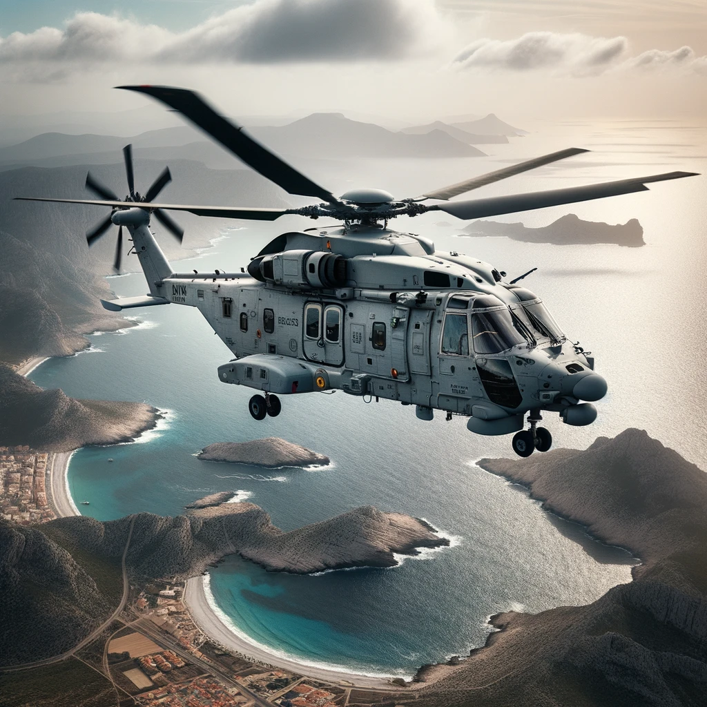

subtitol
L'NH90 és un helicòpter militar bimotor de mitjana capacitat
desenvolupat i fabricat per NHIndustries, una col·laboració entre
Airbus Helicopters, Leonardo (anteriorment AgustaWestland) i Fokker
Aerostructures. Va ser dissenyat per satisfer les demandes de les
forces armades europees per un helicòpter modern i polivalent.
Característiques i punts destacats de l'NH90: Disseny modular: L'NH90
va ser dissenyat amb una estructura modular, la qual cosa permet
adaptar l'helicòpter a diferents missions simplement canviant mòduls
específics. Dues variants principals: L'NH90 es presenta en dues
versions principals: la TTH (Tactical Transport Helicopter) per al
transport tàctic i la NFH (NATO Frigate Helicopter) per a missions
navales. Avançada tecnologia: L'NH90 inclou un sistema fly-by-wire,
materials compostos en la seva estructura i una avançada suite
d'aviónica. Capacitat: Pot transportar fins a 20 soldats o més de
2.500 kg de càrrega. També pot ser equipat amb armes i sensors per a
missions de combat. Operacions navales: La variant NFH està
especialment adaptada per a operacions des de vaixells i inclou un
sonar submergible, torretes amb sensors i armament per a la guerra
antisubmarina i antibuque. Usuaris: L'NH90 ha estat seleccionat per
més de 14 països i està en servei en diverses forces armades arreu del
món. Missions diverses: L'NH90 ha estat dissenyat per realitzar una
àmplia gamma de missions, incloent transport de tropes, evacuació
mèdica, guerra antisubmarina, recerca i rescat, i molt més.
Desenvolupament: El desenvolupament de l'NH90 va començar a la dècada
de 1980 com a resposta a les necessitats d'helicòpters moderns per a
les forces armades europees. Va realitzar el seu primer vol l'any
1995. L'NH90 representa un gran pas endavant en termes de capacitat i
tecnologia en comparació amb helicòpters anteriors en la seva
categoria. La seva versatilitat i avançades característiques el fan
apte per a una àmplia varietat de missions en diferents entorns.